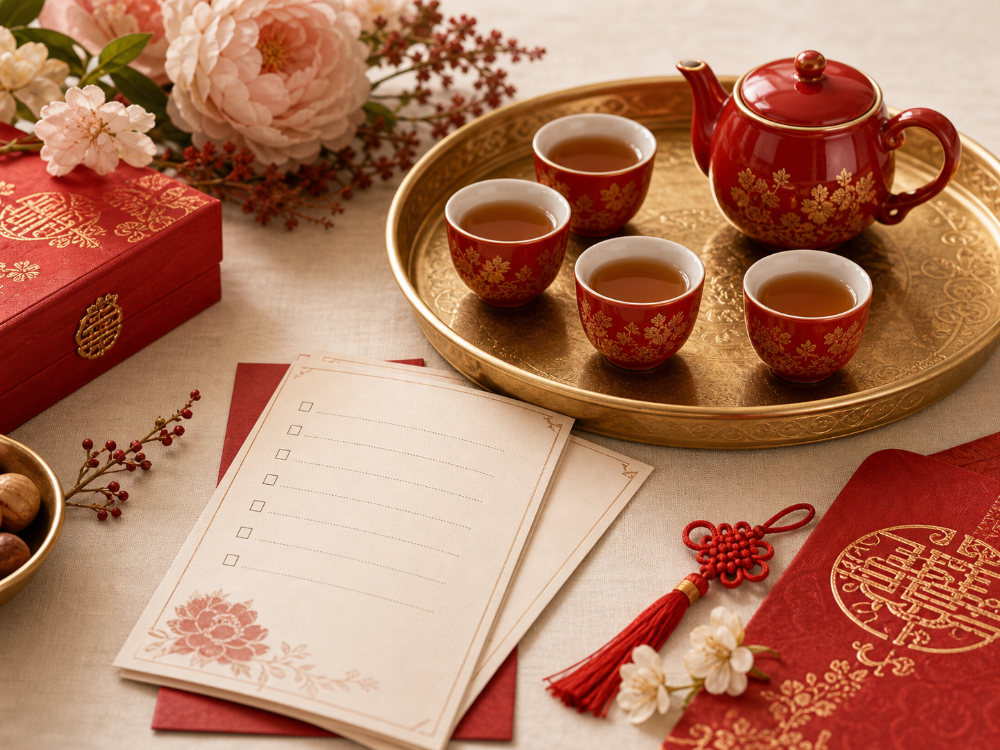
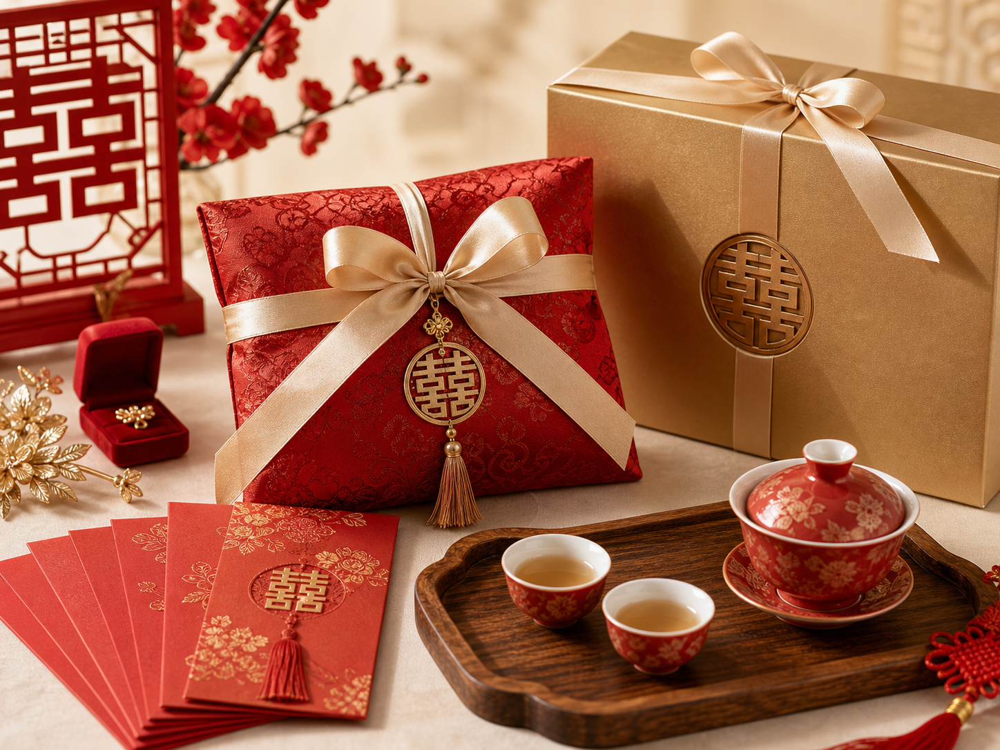
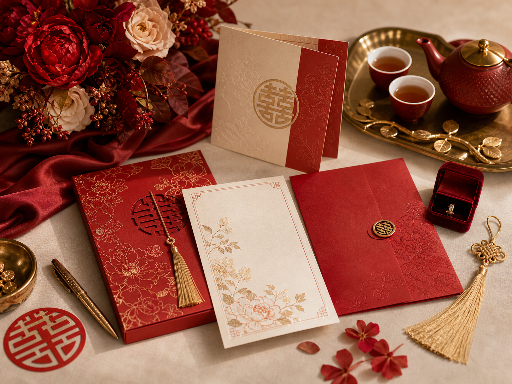

Tea ceremony
Chinese Wedding Tea Ceremony
Who participates, what to prepare, and how modern couples adapt it.
Read guide
Who participates, what to prepare, and how modern couples adapt it.
Read guide
How to prepare, present, and explain red envelopes at a Chinese wedding.
Read guide
Timeline, family roles, ceremony items, and modern reception planning steps.
Open checklistPlan a Chinese wedding tea ceremony with a clear checklist for family order, tea setup, wording, gifts, timing, and modern adaptation.
Read guideUse Chinese wedding colors with practical context for red, gold, white, modern palettes, family expectations, and guest explanations.
Read guideWedding traditions explained for modern couples. is a guide page kept in the active sitemap because it helps visitors complete a main task on this site. Chinese wedding tradition guides for modern couples.
Data anchor: This core page supports https://www.chineseweddingtraditions.com by linking a main user question to the related tool, guide, product, or report path.